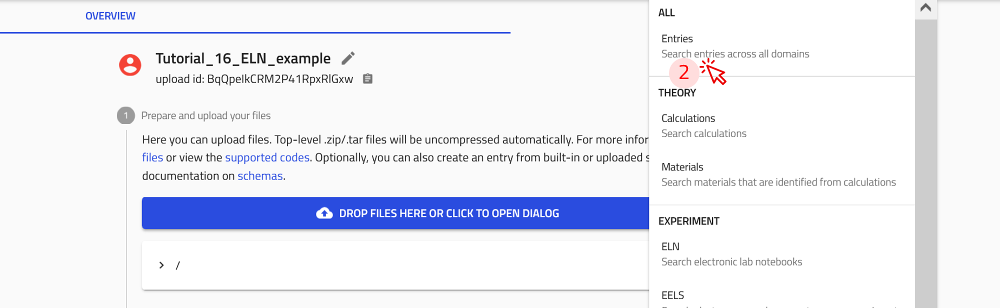

Document Your Research
Create a New Upload¶
On any page in NOMAD, click PUBLISH-> click Uploads-> click CREATE A NEW UPLOAD -> edit/give name -> click SAVE.


Create an Entry Using NOMAD's Built-in Schema:¶
Open the upload you just created or create a new upload. -> click CREATE FROM SCHEMA -> give a descriptive name, select your desired built-in schema from dropdown or type to see suggestions -> click CREATE.


Create a substance entry¶
Now, let's create an entry using the built-in Substance ELN schema for P3HT powder. Follow the steps for creating an entry using NOMAD's Built-in Schema. and select Substance ELN in step 3.
Example: Creating an entry for P3HT powder (screenshots)


The input data fields that the built-in schema Substance ELN offer:
The built-in schema Substance ELN provides the following fields for input:
- substance name: Automatically used as the entry file name.
- datetime: Allows entry of a date/time stamp.
- substance ID: A unique, human-readable ID for the substance.
- detailed substance description: A free text field for additional information.
Additional subsections available in the data subsection include:
- elemental composition: Define the chemical composition with atomic and mass fractions.
- pure substance: Specify if the material is a pure substance purchased from an external vendor, with fields like:
- Substance name
- IUPAC name
- Molecular formula
- CAS number
- Inchi Key, SMILES, and more.
- substance identifier: Add identifiers for specific substances.
Task: Create an ELN entry for a substance (ca. 3 minutes)
Create an ELN entry in NOMAD for one of the following substances:
- Chloroform
- Glass substrate
- Pre-patterned ITO substrates
Use the Substance ELN schema and include as many details as you like (e.g., Substance Name, Datetime, Substance ID, Description).
Tip: Follow the steps for creating an entry.
Create a sample entry¶
Now, let's create an entry using the built-in Generic Sample ELN schema for P3HT Thin Film. Follow the steps for creating an entry using NOMAD's Built-in Schema. and select Generic Sample ELN in step 3.
Example: Creating an entry for P3HT thin film on glass (screenshots)


The input data fields that the built-in schema Generic Sample ELN offers:
The built-in schema Generic Sample ELN provides the following fields for input:
- name: Automatically used as the entry file name.
- datetime: Allows entry of a date/time stamp.
- ID: A unique, human-readable ID for the sample.
- description: A free text field for additional information.
Additional subsections available in the data subsection include:
- elemental composition: Define the chemical composition with atomic and mass fractions.
- components: Specify the components used to create the sample, including raw materials or system components.
- sample identifier: Add unique identifiers for the sample.
Task: Create an ELN entry for a sample (ca. 1 minute)
Create an ELN entry in NOMAD for one of the following samples:
- P3HT Thin Film
- P3HT Solution
Use the Generic Sample ELN schema and include as many details as you like (e.g., Short Name, Datetime, ID, Description).
Tip: Follow the steps for creating an entry.
Create an instrument entry¶
Now, let's create an entry using the built-in Instrument ELN schema for UV Ozone Cleaner. Follow the steps for creating an entry using NOMAD's Built-in Schema. and select Instrument ELN in step 3.
Example: Creating an entry for UV Ozone Cleaner (screenshots)


The input data fields that the built-in schema Instrument ELN offers:
The built-in schema Instrument ELN provides the following fields for input:
- name: Automatically used as the entry file name.
- datetime: Allows entry of a date/time stamp.
- ID: A unique, human-readable ID for the instrument.
- description: A free text field for additional information.
Additional subsections available in the data subsection include:
- instrument identifiers: Specify the type of instrument and additional metadata, if applicable.
Task: Create an ELN entry for an instrument (ca. 1 minute)
Create an ELN entry in NOMAD for one of the following instruments:
- Ultrasonic Bath
- Scale
- Optical Spectrometer
- Conductivity Board
- Spin Coater
Use the Instrument ELN schema and include as many details as you like (e.g., name, datetime, ID, description).
Tip: Follow the steps for creating an entry.
```md
Create a process entry¶
Now, let's create an entry using the built-in Material Processing ELN schema for Preparation of P3HT solution in chloroform. Follow the steps for creating an entry using NOMAD's Built-in Schema. and select Material Processing ELN in step 3.
Example: Creating an entry for P3HT solution preparation (screenshots)


The input data fields that the built-in schema Material Processing ELN offers:
The Material Processing ELN schema provides the following fields for input:
- name: Automatically used as the entry file name.
- starting time and ending time: Allows entry of a date/time stamp for the process duration.
- ID: A unique, human-readable ID for the process.
- location: A text field specifying the location where the process took place.
- description: A free text field for additional information about the process.
Continue the above example: Fill sdditional subsections available in the data subsection (screenshots):
Additional subsections available in the data subsection include (screenshots):
- steps: Define the step-by-step procedure for the material processing. Here we add 3 steps for our process: polymer weighing, solvent filling, and mixing. to do this use the + in front of the steps subsection and add process step name and description. Don't forget to save after each step, and make sure you make the steps in order, because you cannot reorder them later. (see screenshots)

- instruments: List the instruments used in the process. (screenshots)

- samples: Specify the samples that are created or used in the process. Continue by adding the connection of your process to the resulting sample entities. (screenshot)
Note that the added information in the subsections will be used to automatically fill in the Workflow Graph as tasks, as well as the References section. You can find the Workflow Graph, in OVERVIEW tab of the entry. (screenshot)
You can modify the workflow section by adding additional information such as inputs, additional tasks, and outputs. You can do this in the workflow2 section. The workflow2 section of the solution preparation example (ELNProcess) can be reached within the solution preparation entry -> DATA tab -> in the left side pane location workflow2 section. We can now add inputs, either by referencing to an existing entry (e.g., the ELNSubstance we made for P3HT powder),:
or by directly creating a new entry directly in the current ELNprocess (e.g., chloroform based on ELNSubstance in the following screenshots):


once the inputs P3HT and chloroform were added as inputs, you can check the updated Wrokflow Graph in the OVERVIEW tab:
I suggest to put a checkpoint here, for those who did not follow
something like: please download these files from here and drag and drop them to your upload.
Create a measurement entry¶
Similar to the examples given above, you can also create an entry using the built-in Measurement ELN schema for your measurements.
Example: Creating an entry for Optical Absorption Measurement (steps)
- Follow the steps for creating an entry using NOMAD's Built-in Schema. and select Measurement ELN in step 3.
- Use the referencing option to the existing entries, or create new entries to connect to your Measurement ELN, similar to the steps 13-17 and 31-36 in the Built-in Schema for Material Processing.
Key input fields in Measurement ELN:
- Similar to other entries, we have name, starting Time, ID, location, description.
- Subsections such as steps, samples, instruments used in measurement.
Integrate your experiment¶
Once all substances, samples, processes, and measurements are defined, you can integrate them into a structured workflow using the Experiment ELN schema. The Experiment ELN schema allows linking processes and measurements into a single entry for a comprehensive overview of your experiment.
Example: Creating an Experiment ELN Entry (steps)
- Create an entry using the built-in Experiment ELN schema.
- Provide a name, description, and link relevant processes and measurements.
- Save the entry to establish a structured record of your experiment. Following, you see screensots of how your experiment entry and workflow graph will look like after you integrated your processes and measurements to your experiment.

the data section looks like the following:

Exploring and Searching Entries in NOMAD’s ELN¶
Download the example file for this excercise
We have prepared a compressed file for this task, which can be downloaded from this link.
The file contains multiple NOMAD ELN entries in .json format.
These entries have been created using the NOMAD ELN built-in schema, organized into folders, and categorized with custom tags.
You can drag and drop this file into a new upload in NOMAD to view its contents.
Imagine you have created multiple entries of substances, samples, instruments, processes, and measurements, and you need to quickly find a specific experiment or material. Instead of manually searching through files, NOMAD’s ELN allows you to search, filter, and organize your entries—saving you time and effort.
Organizing your ELN upload
NOMAD is a file-based system. You can access, organize, and download your files within each upload. You can also create folders to categorize entries into materials, samples, instruments, processes, and results, as well as upload additional documents, such as relevant PDFs.
If you plan to organize your entries into separate folders, do so before you reference them to each other. Moving them afterward may break the reference links.
You can follow these steps to organize your ELN entries:
-
Navigate to the FILES tab in your upload. This view functions like a file explorer, allowing you to view and manage files.

-
Add new folders and organize them according to your needs.

-
Drag and drop files into the desired folder. A prompt will appear, asking if you want to copy or move the files—choose according to your needs.

-
Once all files are sorted, take a moment to review the structure. Here’s an example of an organized ELN
Searching your ELN entries
To search for entries in your ELN, follow these steps:
-
on the top of the ELN upload page, click on the
 icon.
icon. -
From the drop-down menu, select Entries.

This will open NOMAD's EXPLORE page with a filter applied to display only the entries from your upload.
On the EXPLORE page, you can use the filter options in the sidebar to refine your search, enter specific keywords in the search bar to find relevant entries, or create custom widgets to visualise your ELN data.
Filtering entries in NOMAD
NOMAD provides various filters that can be used to efficiently find your ELN entries, but the following two filters are particularlly effective:
-
Filter by built-in schema used to create the entry.
For example, ELNInstrument, ELNSubstances, ELNSample, etc.
-
Filter by custom tags, where you assign common tags to related entries for easy grouping.
For example, tag all solvents as "my_solvent" or all samples as "my_samples".
Using these filters helps you quickly locate specific entries in your ELN.
Customize your search interface with widgets
Widgets allow you to customize your search interface to better suit your data exploration needs. By adding and rearranging widgets, you can create a personalized view that highlights the most relevant filters, metadata, or visualizations most relevant to your research.
Create a custom widget for ELN sections and custom tags
To create a custom widget for filtering your ELN, follow these steps:
-
Click on the
+ TERMSbutton to open the Edit terms widget menu.
-
In the Search quantity field, type eln. A list of available filters will appear.
-
Select
results.eln.sectionsfrom the list. This will enable filtering based on the built-in ELN sections available in your ELN upload.
-
Write a descriptive title for the custom widget in Title field.
-
Click DONE!

The new ELN sections widget now appears at the top of your EXPLORE page and displays ELN entry types along with their corresponding counts.

You can now follow the same steps to create a custom widget for filtering by custom tags.
In Step 3, instead of selecting results.eln.sections, choose results.eln.tags. This will create a widget that filters your ELN entries based on the custom tags you have assigned.
This widget will then appear on your EXPLORE page, allowing you to quickly view and filter entries by their associated tags.